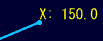
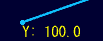
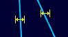
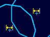

拘束(スケッチ)
拘束(スケッチ)
操作方法
拘束をつける要素を選択します。選択された要素に応じて表示される、作成できる拘束のボタンを押して作成します。
(拘束のタイプ参照)


選択コマンドを使ってコンテキストメニューから拘束をつけることもできます。
拘束のタイプ
以下の幾何拘束を作成することができます。(図は幾何拘束の表示シンボルです。)
- 水平
直線を水平(X軸に平行)にします。

- 鉛直
直線を鉛直(Y軸に平行)にします。

- 平行
２直線を平行にします。

- 垂直
２直線を垂直にします。

- 接線
２線（直線、円弧）を正接にします。

- 中点
点を線（直線、円弧）の中点にします。

- 同心円
楕円、円,円弧の中心点を一致させます。
表示シンボルはありません。
- 一致
点を線上に固定します。
複数の点を同一点とします。表示シンボルはありません。
- 固定
点を固定します。
- X座標値
点のX座標値を固定します。
拘束ボタンを押すと値ダイアログが表示され、座標値を入力できます。
 - Y座標値
点のY座標値を固定します。
拘束ボタンを押すと値ダイアログが表示され、座標値を入力できます。
 - 同一長さ
2つの直線、または、参照線（スケッチ変換や交線で作成した線）と直線を同じ長さに合わせます。
 - 同一半径
2つの円または円弧の半径を同じ長さに合わせます。
